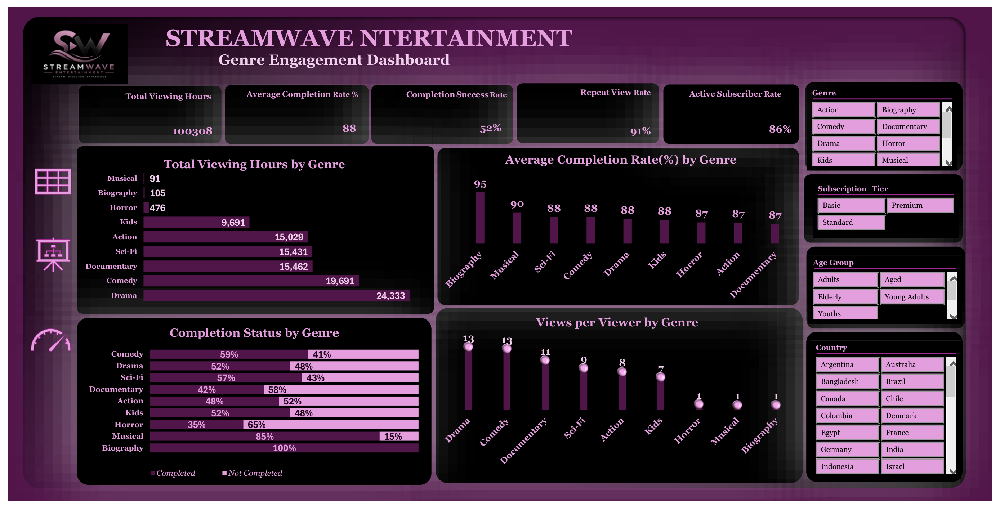
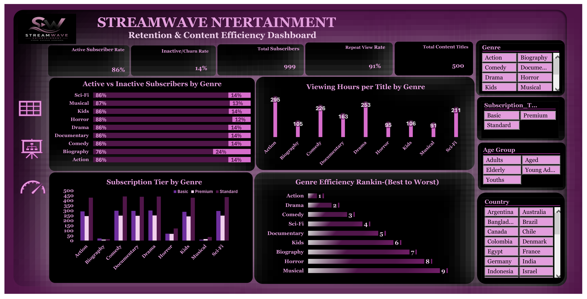

Project Overview
Streaming platforms generate large volumes of viewing data, but high viewing numbers alone do not tell management where the next content investment should go.
This project examines 60,000 viewing records across 500 content titles, nine genres and 999 users to understand not only what audiences watch, but how they engage with the content. The analysis considers viewing hours, completion behaviour, repeat viewing, subscriber activity and content efficiency.
Using Microsoft Excel, I prepared and analysed the viewing data and developed two interactive dashboards covering Genre Engagement & Performance and Retention & Content Efficiency. The objective was to distinguish audience popularity from engagement quality and assess how effectively the available content catalogue generates viewing activity.
The findings provide a basis for reviewing content acquisition, catalogue composition and audience retention priorities without assuming that the most-watched genre is automatically the strongest investment.
01. Genre Engagement & Performance
This dashboard evaluates viewing activity and engagement quality across the nine genres. It compares total viewing hours, average completion rates, completion outcomes and repeat viewing behaviour to identify where audience reach and content engagement differ.

Key Business Findings
The dataset records 100,308 total viewing hours, an average completion rate of 88%, a completion success rate of 52% and a repeat view rate of 91%. These indicators describe different aspects of audience behaviour. The average completion rate reflects how much of the content viewers watched, while completion success measures the proportion of viewing records meeting the project's completion criteria. They should not be interpreted as interchangeable measures.
Drama generated the highest total viewing hours at 24,333, followed by Comedy at 19,691. Documentary and Sci-Fi also contributed substantial viewing activity, with 15,462 and 15,431 hours respectively. This places Drama and Comedy among the strongest genres for overall audience consumption.
However, total viewing hours are influenced by several factors, including the number of titles available, audience size and viewing frequency. A genre with a larger catalogue may naturally accumulate more viewing hours. Therefore, total hours alone should not determine future content investment.
Biography presents an important contrast. Although it contributes relatively few viewing hours, it records the highest average completion rate at approximately 95%. This suggests that the viewers who engage with Biography content tend to watch a greater proportion of it, even though its overall audience activity is much smaller.
The completion-status comparison adds another perspective. Comedy records a completion success rate of 59%, while Drama records 52%. Horror and Musical show much lower completion success rates in the displayed comparison. These differences suggest that engagement quality varies by genre and cannot be inferred simply from viewing hours.
The views-per-viewer comparison further separates broad audience activity from repeat engagement. Drama and Comedy record approximately 13 views per viewer, compared with lower figures across several smaller genres. This reinforces their importance to recurring audience activity, although the dashboard alone does not establish whether this behaviour translates into longer subscription retention.
Taken together, these findings suggest that Drama and Comedy support substantial viewing activity, while smaller genres such as Biography may deliver comparatively strong engagement among the audiences they attract.
Management Considerations
StreamWave should maintain visibility over its high-volume genres while investigating why selected smaller genres achieve stronger completion behaviour. Future content decisions should compare viewing hours, completion success, repeat engagement and catalogue size rather than relying on a single popularity metric.
Before increasing investment in any genre, management should also assess acquisition costs, content availability, audience growth and performance over comparable periods.
02. Retention & Content Efficiency
This dashboard examines subscriber activity and the relationship between content supply and audience consumption. It brings together active and inactive subscriber rates, subscription tiers, repeat viewing and viewing hours per title to assess how efficiently different genres generate engagement.

Key Business Findings
The dashboard reports an active subscriber rate of 86%, with 14% classified as inactive. It also records 999 subscribers, 500 content titles and a repeat view rate of 91%. These measures provide a useful snapshot of subscriber activity and engagement across the catalogue.
Most genres display an active subscriber share of approximately 86% to 87%, while Biography records a lower active share of 76% and an inactive share of 24%. This is noteworthy because Biography performs strongly on average completion, yet has a comparatively weaker subscriber activity profile in this dashboard.
This contrast illustrates why content engagement and subscriber activity should be evaluated separately. A genre may appeal strongly to the viewers who consume it without necessarily having the broadest or most active subscriber audience. The relationship warrants further analysis rather than an immediate conclusion about subscriber churn.
Viewing hours per title provide a different perspective on content performance. Drama records approximately 263 hours per title, followed by Documentary at 226, Sci-Fi at 211 and Action at 205. These values help compare engagement against catalogue size, reducing the risk of favouring a genre solely because it contains more titles.
The genre efficiency ranking identifies Action as the highest-ranked genre, followed by Drama and Comedy. This indicates that the ranking methodology produces a different order from total viewing hours alone. It supports the case for using more than one performance measure when evaluating content investment.
The subscription-tier comparison provides further insight into how audiences are distributed across Basic, Standard and Premium plans. These differences may be useful for future segmentation analysis, although subscriber counts alone cannot establish revenue contribution, profitability or willingness to pay.
Overall, the dashboard highlights the importance of distinguishing subscriber activity from content consumption and catalogue efficiency. The most commercially attractive content mix cannot be determined from viewing behaviour alone, but these findings identify where a more detailed investment assessment should begin.
Management Considerations
StreamWave should compare content efficiency with acquisition and licensing costs before making investment decisions. High-efficiency genres deserve further review, while genres with strong completion but weaker subscriber activity may benefit from targeted audience analysis.
Management should also examine subscriber activity by genre and subscription tier over time, using consistent definitions to distinguish active viewing behaviour from actual customer retention and churn.
Overall Business Conclusion
The StreamWave analysis demonstrates why viewing volume, engagement quality and content efficiency should be considered together when assessing streaming performance.
Drama and Comedy generate substantial viewing activity and repeat engagement, making them important components of the existing content offering. Biography, despite attracting much lower viewing volume, shows particularly strong average completion behaviour. Meanwhile, Action leads the dashboard's genre efficiency ranking.
These findings do not point to a single genre that should receive all future investment. Instead, they suggest that different genres contribute to performance in different ways: some attract high volumes of consumption, others sustain deeper engagement, and others may use catalogue capacity more efficiently.
Recommended Business Priorities
- Evaluate content investment using viewing hours, completion behaviour, repeat engagement and catalogue efficiency together.
- Protect the value of high-demand genres such as Drama and Comedy, while assessing whether additional titles would generate incremental viewing activity.
- Investigate smaller genres with strong completion behaviour, including Biography, to understand audience characteristics and potential growth opportunities.
- Review the drivers of Action's leading efficiency ranking and test whether that performance is consistent across titles and audience segments.
- Incorporate content acquisition costs, licensing expenses, revenue and longitudinal subscriber retention measures into future investment analysis.
The project illustrates how structured Excel analysis can support practical content portfolio decisions by separating popularity from engagement quality and efficiency. It provides management with a clearer basis for deciding which areas to investigate, protect or develop further.